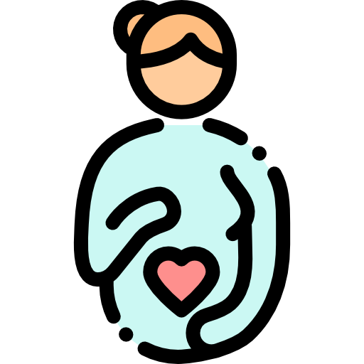

Licença Maternidade
Orientações
* 180 dias
* O salário maternidade é pago pela empresa e ocorrem nas mesmas datas dos demais colaboradores. Durante o pré-natal alguns exames são isentos de cobrança da coparticipação
* Desde o nascimento o seu bebê já poderá consultar pelo plano médico.
* Após o registro do nascimento, a certidão de nascimento deverá ser enviada ao time de ADM – RH
* Após saber a data de término da licença maternidade, já poderá agendar suas férias.
* O vale alimentação continuará sendo creditado normalmente durante a licença maternidade
* Antes do retorno da mamãe, será enviado um e-mail com a guia para realização do exame médico e as orientações referentes aos procedimentos necessários para o retorno ao trabalho.